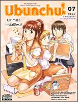
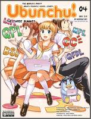
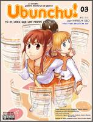

Esta página contiene enlaces a los números publicados de la revista Ubunchu! - El manga en 2011 - 2010 - 2009.
Página web: Revista Ubunchu!
Número 6 - 2011 julio
Descarga (PDF 4.3 MB inglés)
Número 8 - 2011 mayo
Descarga (PDF 5.3 MB inglés)

Número 7 - 2010 septiembre
Descarga (PDF 6.6 MB inglés)
Número 5 - 2010 febrero
Descarga (PDF 5.7 MB inglés)

Número 4 - 2010 enero
Descarga (PDF 5.1 MB inglés)

Número 3 - 2009 noviembre
Descarga (PDF 5.7 MB español)
Número 2 - 2009 mayo
Descarga (PDF 6.9 MB español)
Número 1 - 2009 abril
Descarga (ZIP 5.8 MB español)